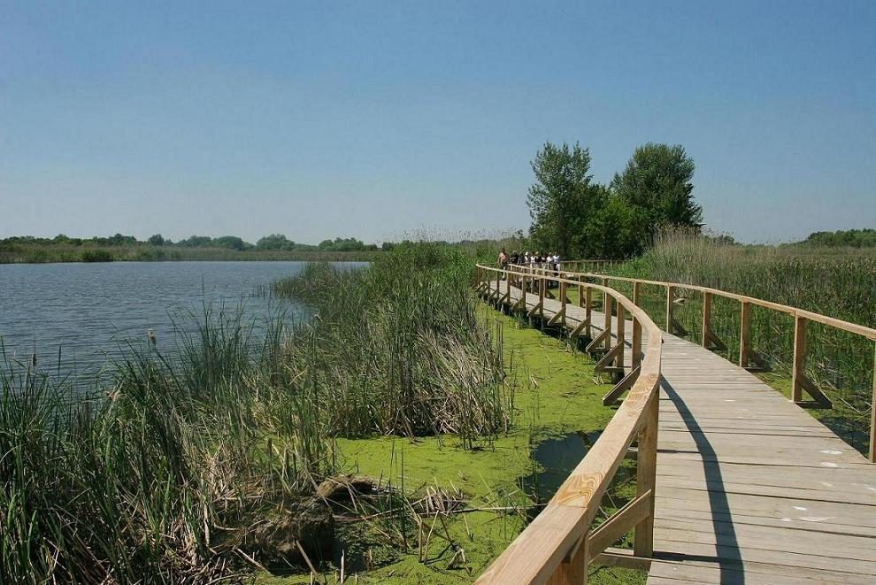
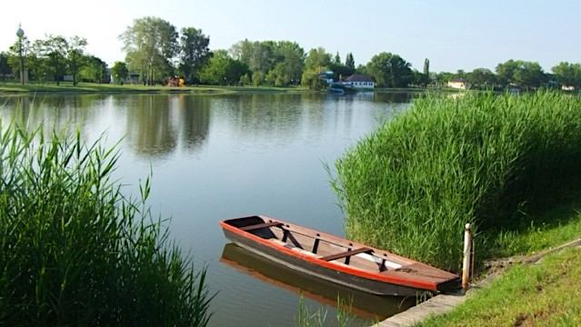

Balaton

A balatoni régió a fürdésnél és a horgászásnál sokkal többet kínál az idelátogató vendégek számára. A vidék az ősidők óta folyamatosan lakott, s ezért szinte minden történelmi korból találhatók itt emlékek. Várak, várromok, középkori templomromok, csodálatos kastélyok őrzik múltunkat. A környék a tihanyi bencés apátságtól, a nagyvázsonyi Kinizsi váron át, a Keszthelyen található Festetics-kastélyig sok műemléket, látnivalót kínál. Emellett figyelmet érdemelnek az épségben fennmaradt balatoni tájházak is. Az oszlopokkal és íves tornácokkal díszített népi lakóházak, a füstöskonyhás parasztházak az itt élő egyszerű, vidéki emberek életébe engednek bepillantást.
A balatoni konyha évszázadok alatt kialakult étkezési szokásokat őriz. A tó közelségének köszönhetően a vidéken gyakran kerül hal az asztalra. A leghíresebb és egyben a legízletesebb halfaj a balatoni fogassüllő, melyet leggyakrabban lisztben, paprikában megforgatva, forró zsírban hirtelen kisütve tálalnak. de érdemes megkóstolni a balatoni halászlét, a vörösboros birkapörköltet, és a hévízi húsos batyut is! Szomjunkat a Kékkút határában csordogáló friss kékkúti ásványvízzel olthatjuk, de a vidék hangulatához, ízvilágához, kultúrájához elengedhetetlenül hozzátartoznak a finom borok is.
A Balatonon évről évre egyre több fesztivál, rendezvény gondoskodik a kellemes időtöltésről. Szüreti fesztiválok, borhetek, borünnepek várják a borkedvelőket és a mulatozni vágyókat. Nevezetes esemény a minden év július utolsó szombatján megrendezésre kerülő balatonfüredi Anna-bál. Remek programok várják a Balaton vendégeit nyáron a Művészetek Völgye néven ismert kulturális fesztiválon. A környékbeli lovardák és lovastanyák csikós-, vagy huszárbemutatóval szórakoztatják az érdeklődőket. Nagy népszerűségnek örvendenek vitorlás- és Balaton-átúszó versenyek is.
Tisza-tó
Tegyen egy képzeletbeli utazást egy különleges vízivilágban, az Alföld síkságán, a hömpölygő folyó és a tó találkozásánál! Burjánzó ártéri erdők, sárgán aranyló homokpadok, holtágak, szigetek, öbölzetek, madarak ezrei köröznek a levegőben és bújnak a nádasokban…körülöttük csend és harmónia. A természet csodája a Tisza-tó.
Magyarország tenyérnyi területén bejárhatja Európa különleges Világörökségét, a Tisza-tavi Madárrezervátumot, romantikus csónaktúrákat tehet, kipróbálhatja szerencséjét a legendás halbőségéről ismert Tiszán.
S ha mozgalmasabb napokra vágyik jet-skí-t, motorcsónakot bérelhet kedvére, kerékpáron, lovon bebarangolhatja az apróbb falvakat, fürödhet termálfürdőkben, kóstolhat halászlevet, birkapörköltet és ellátogathat az ország cseresznyéskertjébe.
A Tisza-tó a természetközeli élmények esszenciája. Ha aktív kikapcsolódásra vágyik, a Tisza-tavi Túraközpont Hálózat megszervezi kirándulását és kiszínezi üdülését. Keresse a garantált szolgáltatásokat nyújtó Vízi-Kerékpáros-Lovas és Gyalogos Túraközpontjainkat. A Túraközpontok jól működő kikötők, szálláshelyek és éttermek a Tisza-tó partján, a Hevesi Füves Pusztákon, a Borsodi Mezőségben, a Hortobágy és a Nagykunság találkozásánál és a Tisza folyó partján. Összesen 3-an, akik behálózva a régiót kínálnak speciális szolgáltatásokat a túrázók számára.
Szelidi-tó
A tó déli partja igazi turisztikai központ. A magánszállásokon kívül itt több kemping és panzió várja az ide érkezőket. A beépített partszakaszon teljes hosszában strandot találunk, mely barátságos jegyárával, rendezettségével, szolgáltatásaival bárhol megállná a helyét. A parton két kölcsönzőben vízi biciklit, csónakot, szörföt is bérelhetünk, továbbá egy 400m2-es Vízi Élménypark várja a látogatókat. Közvetlenül a parton több büfé is üzemel a strandokon megszokottnak mondható kínálattal. A nyári főszezonban sem zsúfolt strandon mindenki megtalálhatja a neki megfelelő pihenési formát. A kisgyermekekkel érkezők is nyugodtan pihenhetnek, mert a víz lassan mélyül, és több helyen külön pancsolók vannak kialakítva a kicsiknek.
A tavon vizibicikli, csónak, kajak, kenu, szörf kölcsönzésre van lehetőség. A tavat és környékét motiváció alapján eddig is pihenés, nyaralás, úszás, fürdőzés, aktív turizmuson belül a vízi sportok űzése, túrázás, a természeti értékek megtekintése, tanulmányozása, illetve horgászat, vadászat miatt keresték fel.
Üdülési szempontból 2 területre oszthatjuk a Szelidi-tó menti területeket. Dunapatajról kiérve először az északi partra fordulhatunk le. Itt kizárólag magánházak, nyaralók találhatók. Pár évtizeddel ezelőtt ezen a partszakaszon teljesen természetes állapotok uralkodtak. Ma már elfogadható állapotú betonút vezet egészen a beépített partszakasz végéig. A parton a nyaraló tulajdonosok stégei és csónakkikötői váltogatják egymást. Kijelölt strandot itt nem találhatunk, de a helyi “íratlan szabály” szerint, ha nincs jelen a tulajdonos, a stégeket nyugodtan használhatjuk. Itt a víz hirtelen mélyül, a parttól egy lépésre már 1,8-2 méter mély. Ezt mindenképpen figyelembe kell venni, ha ezen a részen fürdőzünk. Amennyiben a területileg két részre (Húsfoka, Bodzás) osztott partszakaszon szeretnénk szállást foglalni nem lesz nehéz dolgunk, mert számos nyaraló tulajdonos adja bérbe házát a szezonban.